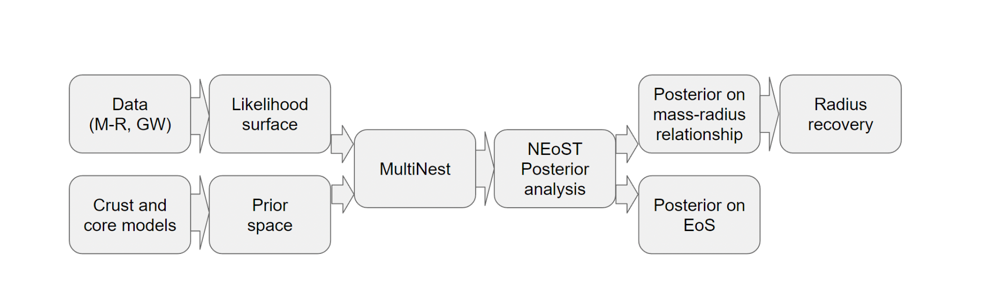

Overview
Matter in the cores of neutron stars can reach several times the nuclear saturation density. The Equation of State (EoS) of matter under such circumstances is not well understood: in addition to extreme levels of neutron-richness there could also exist stable states of strange matter, in the form of either hyperons or deconfined quarks. Neutron star properties like mass \(M\), radius \(R\) and tidal deformability \(\Lambda\) depend on the EoS, so measurement of these quantities provides insight. NEoST provides a framework for EoS inference for different types of astrophysical data, and a library of EoS models.
Framework for Bayesian inference of the EOS
Given EOS parameterizations, governed by parameters \(\boldsymbol{\theta}\), we employ Bayes’ theorem and write the posterior distributions of the EOS parameters and central energy densities \(\boldsymbol{\varepsilon}\) as
where \(\mathbb{M}\) denotes the model including all assumed physics and \(\boldsymbol{d}\) the astrophysical datasets used to constrain the EOS, consisting of, e.g., masses from radio data, masses and radii from NICER, and mass and tidal deformability from gravitational wave data. Assuming each of these datasets to be independent of each other, we can separate the likelihoods and write
Here the products run over the number of different observed stars, or mergers, in the case of the gravitational wave data. Note that we have equated the nuisance-marginalized likelihoods to the nuisance-marginalized posterior distributions for the inferred masses, radii etc. For a discussion of when this is justifiable, we refer the reader to Section 2 of Raaijmakers et al. (2021).
To speed up convergence we transform the gravitational wave posterior distributions to include the two tidal deformabilities, chirp mass \(\mathcal{M}_c = (M_1 M_2)^{3/5}/(M_1 + M_2)^{1/5}\) and the mass ratio \(q\) and re-weight the prior. Then we fix the chirp mass to its median value (see Section 2.2 of Raaijmakers et al. (2020) for more details).
In order to account for the presence of dark matter within this inference procedure, we follow the framework outlined in Rutherford et al. (2023). The inference methods above sample over the central energy density. We instead sample over the ADM mass-fraction, the fraction of ADM mass inside the neutron star, i.e., we introduce \(F_{\chi} = F_{\chi}(\boldsymbol{\theta}, \boldsymbol{\epsilon_{c,B}}, \boldsymbol{\epsilon_{c,ADM}})\) and write the above as
where \(\boldsymbol{\epsilon_{c,B}}\) and \(\boldsymbol{\epsilon_{c,ADM}}\) are the central energy densities of baryonic matter and ADM, respectively. We sample over the mass-fraction because our mass-radius algorithm is structured such that the dark matter energy density is dependent on the mass-fraction.
Astrophysical data
The astrophysical datasets that NEoST uses come in the form of posterior distributions (e.g. for mass alone, mass-radius, or mass-tidal deformability) that are derived from separate inference analyses. Mass posteriors come from pulsar timing analysis of pulsars in binary systems: for an example see Fonseca et al (2021). Mass-radius posteriors from NICER data are generated via Pulse Profile Modelling, see e.g. Riley et al. (2021) for a discussion of the method, and the example file examples/J0740.npy in the NEoST Github repository. Mass-tidal deformability posteriors are derived from gravitational wave data of neutron star binary mergers, see e.g. Abbott et al. (2019) for a discussion of the method, and the example file examples/GW170817.npy in the NEoST Github repository.
Equation of state models
NEoST uses the following general prescription for the EoS models:
Crust models
For densities below 0.5 \(n_s\), where \(n_s = 0.16 \mathrm{fm}^{-3}\), NEoST uses the BPS EoS for the outer crust (Baym, Pethick and Sutherland 1971).
From this density until a core transition density (typically between 1.1 to 1.5 \(n_s\)) NEoST assumes a polytrope with a varying normalization that captures the range of allowed EoS from chiral effective field theory (cEFT). This intermediate part is matched to the parametrized models for core, at higher densities. Various cEFT prescriptions are available: Hebeler et al. (2013); Tews et al. (2013); Lynn et al. (2016); and Drischler et al. (2019). In the most recent version of NEoST, we have also added Keller et al. (2023) \(N^{2}LO\) and \(N^{3}LO\) cEFT EOS, with calculated error bars up to 1.5 \(n_s\).
Core models
Two parameterized core EoS models are provided: a three-piece piecewise polytropic (PP) model with varying transition densities between the polytropes (as used in Hebeler et al. 2013), and a speed of sound (CS) model based on physical considerations at both nuclear and high densities (Greif, Raaijmakers et al. 2019).
For the PP model pressure is written as \(P_i\left(\rho\right)=\rho^\Gamma_i\). The free parameters are the core transition density, the two transition densities between the polytropic segments, and the three polytropic indices. See Piecewise Polytropic Example.
For the CS model the speed of sound is taken to have the following functional form:
with \(x\equiv\varepsilon(m_nn_s)\), where \(m_n\) is the neutron mass and \(n_s\) the nuclear saturation density. The \(a_6\) parameter is used to match between the crust and the core. Parameters \(a_1\) through \(a_5\) are free parameters which are limited by a number of constraints. Pressure can be obtained via integrating over the density in the following manner
The user can alternatively choose to use a tabulated EoS model, in which case there are no free core EoS parameters. See Tabulated Example, which uses the AP4 EoS model.
Additionally, the user can enable the presence of bosonic/fermionic asymmetric dark matter (ADM) from Nelson et al. (2018). The Nelson et al. (2018) ADM model consideres an MeV/GeV mass-scale complex scalar/spin-1/2 dirac spinor particle with repulsive self-interactions mediative by an eV/MeV mass-scale vector gauge boson. These models were considered in the inferences of Rutherford et al. (2023), which also outlines how the Bayesian inference with ADM is modified to compared to one with only baryonic matter. See Piecewise Polytropic with Bosonic ADM Example.
Sampling
NEoST samples from the prior distribution \(p(\boldsymbol{\theta} \,|\, \mathbb{M}) p(\boldsymbol{\varepsilon} \,|\, \boldsymbol{\theta}, \mathbb{M})\), computes the corresponding \(M\), \(R\) and \(\Lambda\), and then evaluates the likelihood by applying a kernel density estimation (kde, see Piecewise Polytropic Example for more discussion of this aspect) to the posterior distributions of the astrophysical data sets using the nested sampling software MultiNest.
The prior distributions \(p(\boldsymbol{\theta} \,|\, \mathbb{M})\) used for the EoS models must be set: the default priors are as described in Section 2.3 of Raaijmakers et al. (2020).